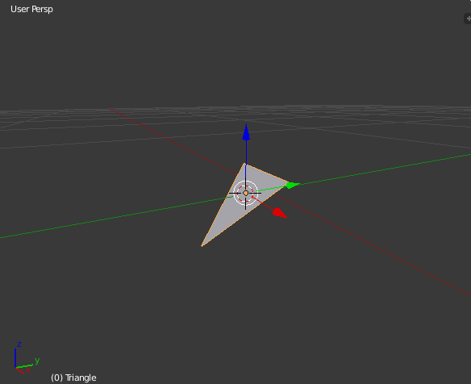
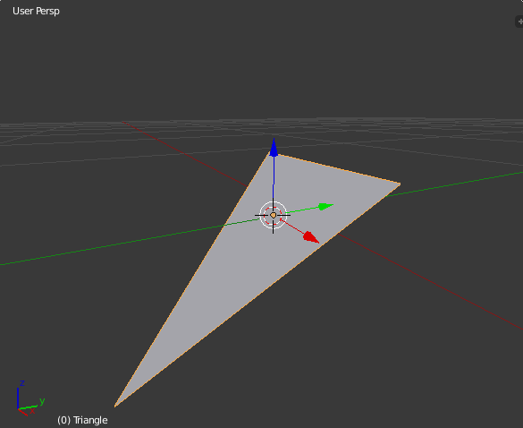
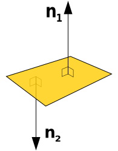
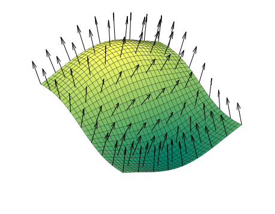
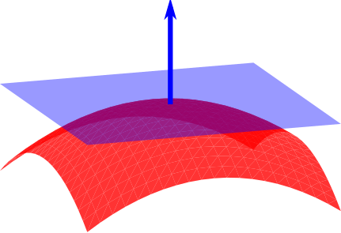

Three.js provides the Plane concept for representing two dimensional surfaces that extend infinitely in 3d space. This is useful for cursor interaction so you might need to learn how to set up this plane, visualize it, and adjust it as needed.
Three.js's Plane documentation is good and accurate, but it definitely assumes you're a "math person" (which I'm not), and doesn't explain how to get things working if you've never heard of things like quaternions and plane normals. I've had to learn about these things the good old-fashioned hard way, and so I've put together this guide for other developers like me just getting into 3d graphics.
First, it's good to get an intuitive feel for what a plane is: how would you represent a plane in 3d space? I suppose you could define any plane using 3 points, creating a triangle that extends infinitely along its surface. It wouldn't matter what size the triangle is: the plane is still the same as long as its slope is the same. Here's a Blender scene to help visualize that:
 So, representing the plane as a collection of three points can definitely work, but maybe there's an even better way to represent this structure. There's a concept called a surface normal, which is a vector (i.e., an arrow pointing out in a certain direction) that is perpendicular from a surface. Here's an image from Wikipedia showing a surface with two normal vectors (a vector consists of three parameters: x, y, and z):

And here's an illustration of surface normals for a curved surface:

You can imagine a flat plane for each of those normals, like this:

This is the way that three.js's Plane is put together, clearly visible in its constructor:
Plane( normal : Vector3, constant : Float )
normal - (optional) a unit length Vector3 defining the normal of the
plane. Default is (1, 0, 0).
constant - (optional) the signed distance from the origin to the
plane. Default is 0.
So to set up a plane facing straight up, you can do something like this:
var myPlane = new THREE.Plane(new THREE.Vector3(0, 1, 0), 0);
The normal vector is pointing up because y has a value, and it's not pulled toward the x or z directions at all. In fact, if you set the normal vector to (0, 2, 0) or (0, 200, 0) you get the exact same plane, because what's important with a normal vector is its direction, not its magnitude. The constant value of 0 means that this plane is centered right at the scene's center point.
By the way, by default this plane will be invisible in your three.js scene. To see it, you connect a PlaneHelper to it. This might get confusing, but if your goal is to actually draw this surface for the user to see then you would use a PlaneGeometry, which inherits all its basic methods from Object3D. The Plane class that I'm talking about in this article is just a mathematical plane, but you need to use this sort of plane in order to use Ray.intersectPlane(), which is how you connect up mouse events to a flat plane in three.js.
So, now you know how to initialize the plane, and basically move it around. What if you need to rotate this thing? Well, you can always just change the parameters in the plane's normal vector, right? That's actually a really difficult way to work with planes, though. If you need to match this plane's rotation with a visible object's rotation that's already in the scene, or just apply something like a 45-degree rotation offset, messing around with the normal vector might be frustrating. I'll go over some basic patterns for rotating this plane using a few tools.
You're going to need to learn how to work with quaternions. They seem really complicated, but all you need to know is that they're a set of coordinates that define a three.js object's current rotation state, and every Object3D has one. You can use three.js's API to apply changes to quaternions and modify them to do what you need to do.
// There's an object in the scene - myObject - and
// I want to take its rotation and make my plane
// have the same rotation.
var rotation = myObject.quaternion.clone();
// The default forward vector for 3D objects is (0, 0, 1),
// so first set the normal to match myObject like that,
// and then make the plane's rotation match myObject as well.
myPlane.normal.set(0, 0, 1).applyQuaternion(rotation);
You can also make any changes to this quaternion that you need before you apply it to the plane. Say you need a 90 degree offset on this rotation:
var offset = new THREE.Quaternion();
offset.setFromAxisAngle(
// This rotation offset is along the X axis,
// so use a vector where X is 1 here.
new THREE.Vector3(1, 0, 0),
// Offset by -90 degrees (in radians)
-Math.PI / 2);
// Modify the rotation
rotation.multiply(offset);
// The 'rotation' quaternion is now ready to be applied to the plane
I know, it seems like a lot of rigamarole for some simple rotations. Just think of it as another pattern in your toolkit. In fact, adding some simple rotation mechanism to three.js's Plane API has been discussed. The math behind the reason you can't rotate a Plane the same way as an Object3D is a little beyond me, but it sounds like it's because Plane doesn't have a "local coordinate system".
So this post has been kind of dense. But I hope it's helpful for anyone jumping into this area of three.js. And also this can be seen as a testament to abstraction: it's really possible to make 3D graphics work for your needs without understanding all the math behind it, and little by little you get a feel for working with vectors, and the various coordinate systems, etc.